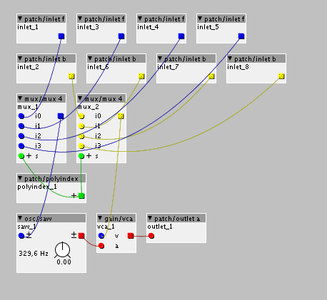
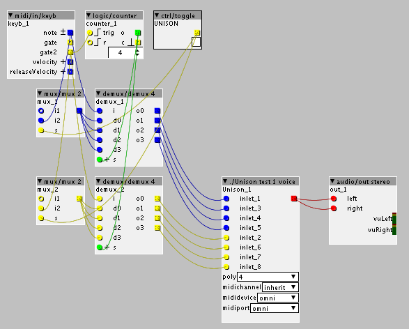

On the microKorg for example you can change the voicing to be mono (only one voice plays), poly (normal polyphonic voice allocation), or unison (all voices play at once). I see the Deepmind has modes like unison 2 (2 voices play) etc. Can this be patched into a poly subpatch on the Axoloti? I keep thinking the polyindex object has to be involved in this but can't figure out how to do it 
edit:
I thought about it a little more. Sadly I am away from home for a few days without my Axo but I wanted to ponder on this to make good use of my time.. I came up with an idea but am not sure if it is completely the wrong way to go.
So here's the super simple "voice". It has 4 inlets for both pitch and gate and the polyindex object determines which of these the voice will listen to.

The MIDI in object is in the parent. There is a counter that advances on each trig and controls the demuxers for pitch and gate that determine to which voice on the subpatch these are sent. Then there is a toggle that when on should make the pitch and gate go to every voice.

Would this work or am I on the wrong track?